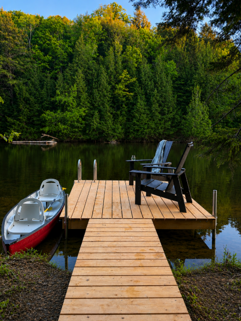
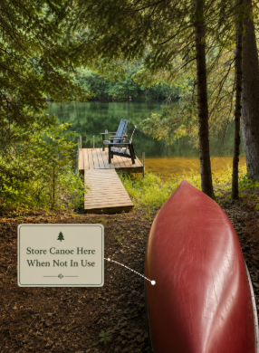
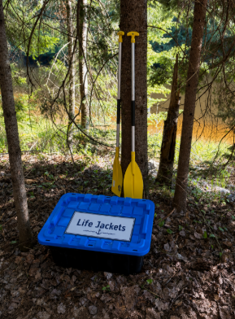

Private dock access
The Muskoka River is calm, clean, and excellent for swimming during the summer months.
Enjoy exclusive access to the Muskoka River during your stay. The waterfront area features a private dock, lounge chairs, and a canoe for exploring the river.

The Muskoka River is calm, clean, and excellent for swimming during the summer months.
The waterfront is approximately a 5-minute walk from the Aux Box.
A canoe, paddles, and life jackets are provided for your enjoyment.
Before heading back up the trail, take a moment to return the canoe gear and leave the dock area in the same condition you found it.

Return the canoe to its designated storage location when you are finished at the dock.

Place all paddles and life jackets back into the storage bin before heading up the trail.
Leave the dock area tidy and in the same condition you found it.